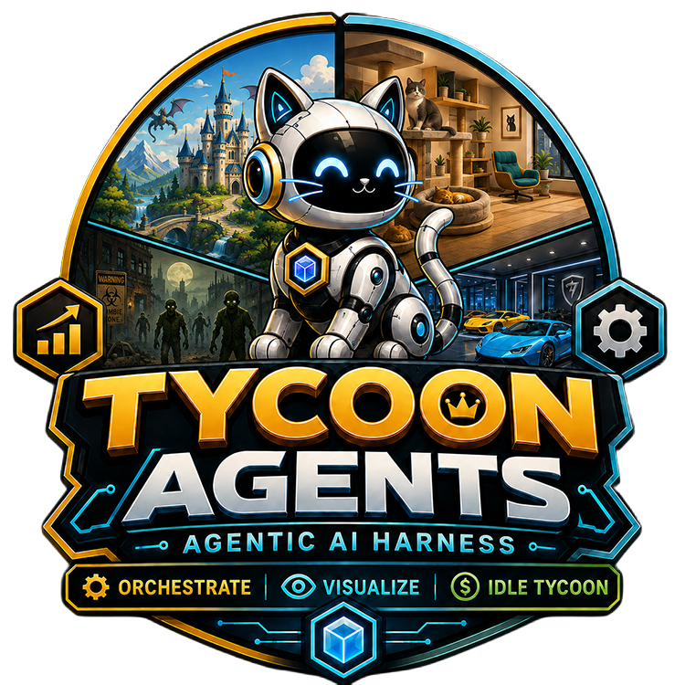

TycoonAgents is in beta — features may change, and we welcome your feedback.
TycoonAgents runs as a VS Code extension or as a standalone app you open in a browser with no VS Code at all, paired with Claude Code (the default), Codex, or OpenCode (Codex and OpenCode are Experimental) as the harness running your agent team. Every feature described after setup is identical no matter which way you're running it. Codex and OpenCode are labeled Experimental because they have not been tested as thoroughly as Claude Code as a harness.
TycoonAgents turns your multi‑agent delegation into a living tycoon scene, and you can run it as a VS Code extension or as a standalone app in your browser with no VS Code installed at all, with Claude Code, Codex, or OpenCode as the harness running your agent team (Codex and OpenCode are Experimental). See Chapter 03, Standalone and OpenCode Setup for how to pick and configure one. Whichever way you run it, every feature described after setup — the theater, Theme Maker, metrics, delegation tabs, project plan — is identical: an orchestrator agent hands work off to cheap specialist agents, hooks record every dispatch and completion, and the panel renders those agents as characters who walk the stage, build, emote, earn badges, and even rebirth (prestige) as your project grows. TycoonAgents itself makes zero runtime AI calls — it only observes hooks and renders what already happened. The visuals are a theme: an art skin you generate once with the built-in Theme Maker, then the panel renders it forever, fully offline.
This handbook is split into three parts. Part I gets you installed and oriented, in whichever host you're using. Part II walks the Theme Maker end to end. Part III is a reference for settings, the metrics/delegation tabs, the project plan feature, the UEFN pack, and troubleshooting.